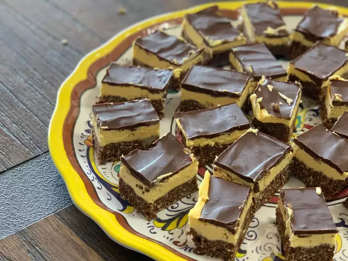

Nanaimo Bars from allrecipes.com

Description
These Nanaimo bars are three layers but worth the effort. My son is famous for making and taking these to work. I've heard other names, but everyone knows them as Nanaimo bars here in the Northwest. They are sold on British Columbia Ferries and at coffee stands. If you can't find custard powder, I've used instant pudding mix with good results.
Ingredients
- 1 cup butter, softened, divided
- 5 tablespoons unsweetened cocoa powder
- ¼ cup white sugar
- 1 egg, beaten
- 1 ¾ cups graham cracker crumbs
- 1 cup flaked coconut
- ½ cup finely chopped almonds (Optional)
- 3 tablespoons heavy cream
- 2 tablespoons custard powder
- 2 cups confectioners' sugar
- 4 (1 ounce) squares semisweet baking chocolate
- 2 teaspoons butter
Steps
- In the top of a double boiler, combine 1/2 cup softened butter, cocoa powder, and sugar. Stir occasionally until melted and smooth. Beat in egg and stir until thick, 2 to 3 minutes.
- Remove from the heat and mix in graham cracker crumbs, coconut, and almonds. Press into the bottom of an ungreased 8x8-inch pan.
- For the middle layer, beat remaining 1/2 cup softened butter, heavy cream, and custard powder until light and fluffy. Mix in confectioners' sugar until smooth. Spread over the bottom layer in the pan. Chill to set.
- While the second layer is chilling, melt semisweet chocolate and 2 teaspoons butter together in the microwave or over low heat.
- Spread melted chocolate mixture over chilled bars. Let the chocolate set before cutting into squares.